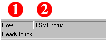

The status bar of the Sequence Editor is extremely simple:

Figure 3.8
Sequence Editor Status Bar Elements:
1. Row Number:
This number indicates the current row in which your cursor is placed.
2. Current Machine:
This string indicates the current machine/column.